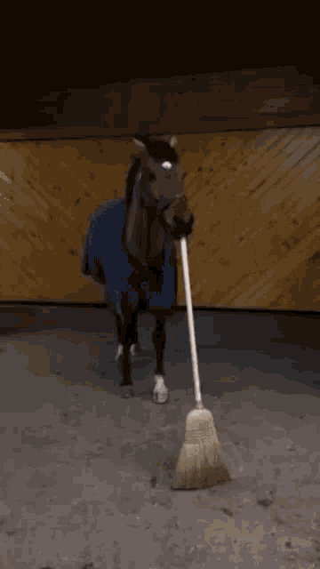

All is good now. Everyone in the math department at UWM knows how awful Math 105 is, and they do care about students! I have the joy to finish my degree now!
Also, here are my notes from the last lecture Professor Emeritus Steve Leonhardi gave at WSU. His wisdom is great indeed, and I am glad to have stumbled upon it once again.
Previous Statements
| Thoughts on Charlie Kirk's Assassination | Pain of teaching Math 105 at UWM in Fall of 2025 (Warning: I was angry. I state things that aren't true.). |